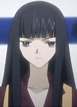
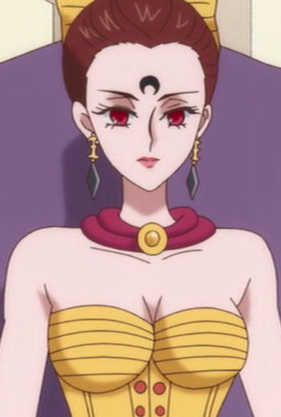

|  |
Arashi |
- Tsubasa Chronicle
- Tsubasa Chronicle 2nd Series
|
Arashi is a retired priestess married to Sorata. Her specialty is sword fighting, a massive sword. She has a cold and stoic personality. |
|  |
Calaveras |
- Sailor Moon R
- Sailor Moon R Memorial
|
Calaveras is the second-oldest of the Ayakashi sisters. She is the counterapart of Minako Aino/Sailor Venus. Calveras uses a whip for her main attack. She is can be a petty woman who indulges in teasing her sisters, but she knows stuff about her sisters. |
 |
Yaeko Nishimiya |
|
Yaeko Nishimiya is the mother of both Shouko and Yuzuru Nishimiya. She caught a virus that left her first daughter, Shouko, deaf. She was originally married by then divorced. |